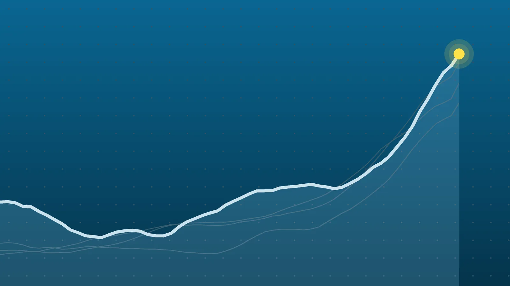

ScienceExplainer
Hunter’s Moon 2026: Peak Time, Meaning and What to See Tonight
The moon was technically full overnight, but it will still look full when it rises Monday evening. It isn’t a supermoon, though the next three full moons are.

Quick take
- The Hunter’s Moon reached full phase at 04:11 UTC on Oct. 26, which was 12:11 a.m. EDT, according to Space.com; two almanacs list 12:12 a.m.
- It is called the Hunter’s Moon because it is the first full moon after the Harvest Moon, which fell on Sept. 26 this year.
- Saturn sits a little over 20 degrees south of the moon for U.S. viewers, and the moon is due to pass in front of the Pleiades star cluster on Oct. 27.
- The next full moon, the Beaver Moon, peaks at 9:53 a.m. EST on Nov. 24 and is the first of three supermoons in a row, according to the Farmers’ Almanac.
Why it's trending October’s full moon, known as the Hunter’s Moon, reached its peak in the early hours of Monday, Oct. 26, and remains visible near full on Monday evening.
What happened
October’s full moon, traditionally called the Hunter’s Moon, reached its fullest point at 04:11 UTC on Monday, Oct. 26. On the U.S. East Coast that was 12:11 a.m. EDT, just after midnight, according to Space.com. Because the exact moment fell late Sunday night in much of North America, Sunday evening was the prime time to catch it rising.
Monday night still offers a good look. To the naked eye the moon will appear essentially full, and it should come up in the east roughly an hour after sunset, according to the Farmers’ Almanac. No telescope or binoculars are needed, though a clear view of the eastern horizon helps.
Why it’s called the Hunter’s Moon
The name depends on the full moon that came before it. The Harvest Moon is the full moon nearest the September equinox, as timeanddate.com explains, and the Hunter’s Moon is simply the next one. This year the Harvest Moon fell on Sept. 26, so the Hunter’s Moon followed about a month later.
The label comes from the old rhythm of the Northern Hemisphere autumn. With crops brought in, October became the season for hunting and putting away meat ahead of winter, according to The Old Farmer’s Almanac. Cleared fields and bright moonlight made animals easier to track after dark.
Other cultures named this moon differently. Space.com lists the Cree “Migrating Moon,” the Ojibwe and Haida “Ice Moon” or “Freezing Moon,” and the Celtic “Seed Fall Moon.”
There is also a seasonal reason the autumn full moons stand out. On average, the moon rises about 50 minutes later each night. Around the fall equinox, the angle of the moon’s path against the horizon at mid-northern latitudes shrinks that delay, so bright moonlight arrives soon after sunset for several evenings in a row.
When and where to look
Sources differ by one minute on the peak. Space.com puts it at 04:11 UTC, while The Old Farmer’s Almanac and the Farmers’ Almanac list 04:12 UTC. This article uses 04:11; the gap is likely rounding.
Clock changes add a wrinkle. Most of Europe switched back to standard time on Oct. 25, so the U.K. is now on GMT, which matches UTC. The U.S. stays on daylight saving time until Nov. 1.
| Location | Full moon (local time) |
|---|---|
| UTC / London (GMT) | 4:11 a.m. Monday, Oct. 26 |
| Paris, Berlin (CET) | 5:11 a.m. Monday, Oct. 26 |
| New York (EDT) | 12:11 a.m. Monday, Oct. 26 |
| Chicago (CDT) | 11:11 p.m. Sunday, Oct. 25 |
| Denver (MDT) | 10:11 p.m. Sunday, Oct. 25 |
| Los Angeles (PDT) | 9:11 p.m. Sunday, Oct. 25 |
| Tokyo (JST) | 1:11 p.m. Monday, Oct. 26 |
| Sydney (AEDT) | 3:11 p.m. Monday, Oct. 26 |
Moonrise times depend on where you are. A moon low on the horizon often looks huge, but that’s a trick of perception known as the moon illusion; its actual size in the sky doesn’t change as it climbs, Space.com notes.
Is it a supermoon?
No. None of the sources reviewed calls this full moon a supermoon. It does arrive two days before perigee, the moon’s closest point to Earth this month, so it may look a little larger than average, according to the Astronomy Club of Asheville. At the moment of full phase the moon was about 368,872 kilometers (229,207 miles) away, according to TheSkyLive.
What’s nearby in the sky
For viewers in the U.S., Saturn shows up as a bright point a little over 20 degrees south of the moon, Space.com reports. That’s roughly two fist-widths held at arm’s length. A small backyard telescope with a 6-inch aperture can show its rings. The Great Square of Pegasus sits above the planet, and the bright star Capella climbs in the northeast about an hour after dark.
Early risers on Monday could also see Jupiter about halfway up the southeastern sky before dawn, between reddish Mars and the star Regulus in Leo.
The moon itself is drifting from Pisces into Aries. Space.com says it will pass in front of the Pleiades star cluster on Oct. 27, an event known as an occultation, though visibility depends on location.
What happens next
The next full moon, the Beaver Moon, peaks at 9:53 a.m. EST on Tuesday, Nov. 24, or 14:53 UTC, according to the Farmers’ Almanac. By then the U.S. will be back on standard time, which is why the label shifts from EDT to EST. That’s 29 days, 10 hours and 42 minutes after this month’s peak.
The Beaver Moon is the first of three straight supermoons, followed by full moons in December and January, the Farmers’ Almanac says. At perigee in November the moon will be about 360,768 kilometers from Earth, roughly 8,100 kilometers closer than at this month’s full moon. Space.com lists December’s Cold Moon at 8:28 p.m. EST on Dec. 23 and January’s Wolf Moon at 5:02 a.m. EST on Jan. 3, 2027.
Quick answers
What time is the Hunter’s Moon tonight?
The exact full phase already passed at 12:11 a.m. EDT on Monday, Oct. 26. On Monday evening, look east about an hour after sunset, when the nearly full moon rises.
What is the difference between the Harvest Moon and the Hunter’s Moon?
The Harvest Moon is whichever full moon lands nearest the September equinox. The Hunter’s Moon is the first full moon after it, which in 2026 means October’s.
When is the next full moon?
The Beaver Moon peaks on Nov. 24 at 9:53 a.m. EST and will be a supermoon.
Sources
- Space.com October full moon 2026: When, where and how to see the Hunter's MoonSept. 28, 2026
- The Old Farmer's Almanac Full Hunter's Moon, October 2026: Date, Meaning, and FolkloreOct. 26, 2026
- Farmers' Almanac Hunter's Moon 2026: October Full Moon Date, Folklore, and Viewing GuideAug. 26, 2026
- Farmers' Almanac Beaver Moon 2026: November Full Moon Date, Folklore, And Sky GuideAug. 19, 2026
- timeanddate.com October: Hunter's MoonOct. 26, 2026
- Astronomy Club of Asheville Oct 2026 Hunters MoonAug. 1, 2026
- TheSkyLive Full Moon of October 2026Oct. 26, 2026